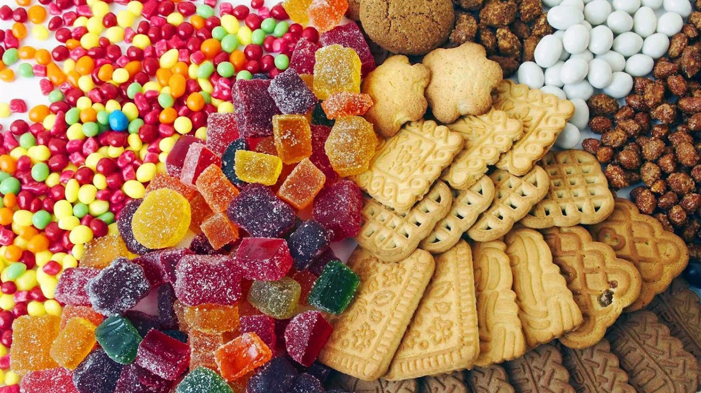

A História do Açúcar
Contexto Histórico
O açúcar comum é resultado de um processo de transformação que foi desenvolvido por volta do século VI a.C. a partir da cana-de-açúcar. As Cruzadas foram responsáveis pelo acesso dos povos europeus a essa iguaria, que passou a ser muito apreciada. Por volta do século XII, a então República de Veneza passou a dominar seu processo de produção e abastecer a Europa. O que podemos chamar de revolução do mercado açucareiro só ocorreu a partir das expansões marítimas europeias por meio, sobretudo, do Oceano Atlântico, no contexto do mercantilismo. Pequenas ilhas passaram a comportar estruturas de produção açucareiras. Portugal passou a desenvolver a produção de açúcar em maior escala a partir de meados do século XV, nos territórios da Ilha da Madeira, Açores e Cabo Verde. Portanto, antes dessa produção chegar às colônias nas Américas, por volta do século XVI, os portugueses já dominavam as técnicas de produção do açúcar, inclusive com a implementação da mão de obra escrava. Após o estabelecimento dos portugueses, em 1500, na terra em que seria chamada de Brasil, a produção do açúcar não foi implementada a princípio. Até 1530, consolidou-se o que ficou conhecido como Ciclo do Pau-Brasil, no qual a madeira que concede o nome ao ciclo era o principal produto comercializado entre a colônia e a metrópole. Foi somente a partir da expedição colonizadora designada pelo Império Português a Martim Afonso de Sousa, entre 1530 e 1532, que a produção do açúcar passou a se desenvolver no Brasil, tornando-se, depois, a base da economia colonial até o século XVIII e caracterizando o que ficou conhecido como Ciclo do Açúcar.
Atualidades
Consumo de doces na pandemia aumenta 63%, segundo pesquisa
A mudança na rotina decorrente da pandemia de coronavírus afetou a alimentação de muitas pessoas, inclusive o consumo de doces aumentou por conta da ansiedade em que vivemos e também pelas pessoas estarem mais em casa. É comum ouvir relatos de quem passou a consumir mais doces praticamente todos os dias. De acordo com dados da pesquisa recente ConVid, realizada pela Fundação Oswaldo Cruz (Fiocruz) em parceria com a UFMG e a Universidade Estadual de Campinas (Unicamp), o consumo de alimentos saudáveis diminuiu durante a pandemia, passando de 37% para 33%. Por outro lado, a ingestão de doces, por exemplo, aumentou. Entre jovens adultos, na faixa de 18 a 29 anos, 63% está consumindo doces ou chocolates duas vezes por semana ou mais. Segundo a nutricionista Laís Gonçalves, de Rio Preto, esse aumento se explica pela forma como os doces agem no organismo. Ricos em glicose, substância que entra rapidamente na corrente sanguínea, o consumo desses alimentos gera rápida absorção e estimula a produção de alguns hormônios, como a serotonina responsável pela regulação do sono e humor.
Fonte: https://dhojeinterior.com.br/consumo-de-doces-na-pandemia-aumentou-63-segundo-pesquisa/
Riscos à saúde
O açúcar também pode causar danos ao nosso organismo; portanto, o consumo deve ser feito com cautela. Segundo recomendação da Organização Mundial de Saúde (OMS), apenas 10% do total de calorias consumidas diariamente devem ser provenientes do açúcar. Uma dieta saudável e ideal deve restringir-se a 5%. Isso significa que o ideal é que uma pessoa consuma 25 gramas de açúcar por dia ou, no máximo, 50 gramas. O maior problema que pode ser causado pelo excesso de açúcar, sem dúvidas, é a obesidade. Essa doença grave, considerada por muitos uma epidemia mundial, é um fator de risco para o desenvolvimento de doenças crônicas sérias, tais como problemas cardiovasculares, hipertensão, diabetes e até mesmo cânceres. Além dos riscos decorrentes do excesso de peso, a grande quantidade de açúcar na alimentação pode sobrecarregar o pâncreas, que necessita produzir insulina constantemente para manter os níveis de glicose no sangue adequados.
Fonte: https://mundoeducacao.uol.com.br/
Vinicius dos Santos Tavares - GU3017087 || José Soares da Silva Junior - GU3017192 || Rayssa Mara Amaral - GU3016536